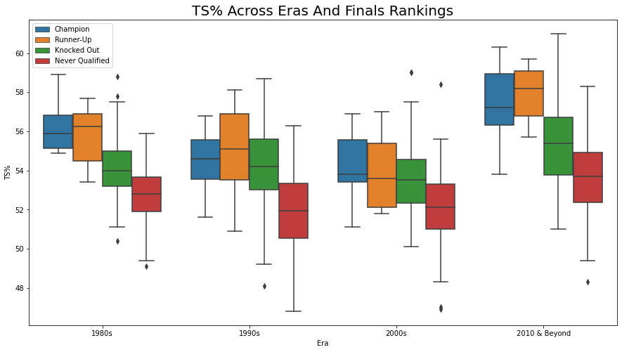
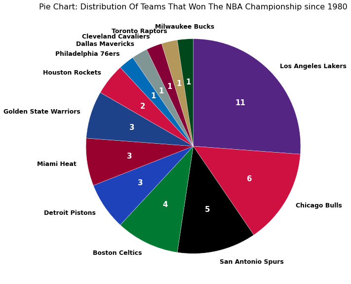
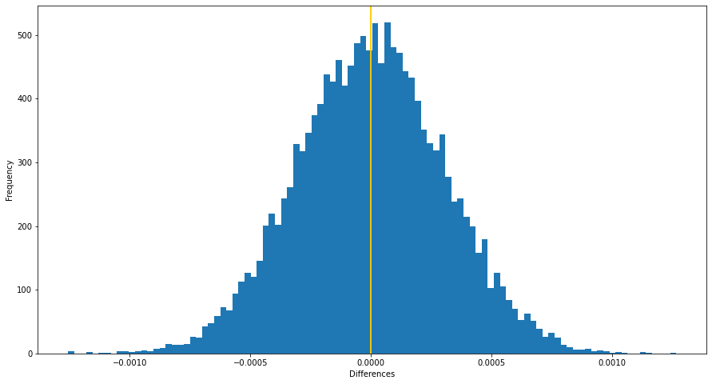

For this project, I am mainly interested in conducting data exploration and analysis on the offensive stats and characteristics of
different NBA teams between 1980 and 2021 based on Finals ranking which is a new column I will create that contains 4 values: Champion, Runner-Up,
Knocked Out and Never Qualified. Knocked Out and Never Qualified implies that they have either been knocked out of or never qualified
for the NBA playoffs. Some stats that you will see me analyze and visualize are Margin of Victory(MOV), 3P%, Age and shot attempts.
Project Information
To begin, I scraped data from the Basketball Reference website, which contains each team's performances throughout the years.
I scraped a total of 4 different stats tables from the website and stored them in 4 different datasets. In this notebook, I used
3 different packages: Pandas, BeautifulSoup and Requests.
I will then clean the data. Some steps I took here are dealing with null values, dropping unneeded columns, converting datatypes and
cleaning up the values. After cleaning up the data, I merged 4 of the datasets into 2. I have also created a new column to indicate
the NBA teams' Finals ranking in this notebook. One consists of the teams' total stats per year and one consists of the average stats
per game for each year. In this notebook, I used 2 different packages: Pandas and Numpy.

Lastly, I will analyze and create some visualizations of the stats. I started off by analyzing the total stats first to get a broad picture
view by conducting and creating visuals for univariate and bivariate exploration. Afterward, I moved onto the average stats per game of
each year where I conducted the same type of explorations along with multivariate exploration. You will find that I have also created a couple
categorical variables for my analysis as well. In this notebook, I used 5 different packages: Pandas, Numpy, Seaborn, Matplotlib and Warnings.
You will find the majority of the multivariate exploration near the end and a lengthy conclusion.

Assume that the audience is the CEO and CFO of Budweiser (your client) and that they only have had one class in statistics
and have indicated that I cannot take more than 7 minutes of their time. They have hired you to address the 9 questions / items
Project Questions to Answer
- 1.How many breweries are present in each state?
- 2.Merge beer data with the breweries data. Print the first 6 observations and the last
six observations to check the merged file.
- 3.Address the missing values in each column.
- 4.Compute the median alcohol content and international bitterness unit for each state.
Plot a bar chart to compare.
- 5.Which state has the maximum alcoholic (ABV) beer? Which state has the most bitter (IBU) beer?
- 6.Comment on the summary statistics and distribution of the ABV variable.
- 7.Is there an apparent relationship between the bitterness of the beer and its alcoholic content? Draw a scatter plot.
Make your best judgment of a relationship and EXPLAIN your answer.
- 8.Budweiser would also like to investigate the difference with respect to IBU and ABV between IPAs (India Pale Ales) and other
types of Ale (any beer with “Ale” in its name other than IPA). You decide to use KNN classification to investigate this relationship.
Provide statistical evidence one way or the other.
- 9.Find one other useful inference from the data that you feel Budweiser may be able to find value in. You must convince them why it is
important and back up your conviction with appropriate statistical evidence
This project was done as part of the DS 6306 course at Southern Methodist Univeristy.
Video Presentation
R Markdown

In this project, I am interested in working to understand the crime rate in London, England. My goal is to work through this notebook to
understand violent crime rates and when they are likely to occur throughout the year. This dataset contains all crimes (non-violent and
violent) committed between 2008 and 2016. However, the nature of the crime-violent or non-violent- is not specified in this dataset, so
we will need to deal with that during the preprocessing phase. We will also need to specify which months are the ones when daylight saving
is in effect.
Project Information
There are a total of 2 notebooks dedicated to this project. This first notebook(London Crime Hypothesis Testing.ipynb) is dedicated to testing
the individual factors(borough/location & daylight saving) that I think may affect the violent crime rate while the second
notebook(London Crime Hypothesis Testing Part II.ipynb) to testing the interactions between location/borough and daylight saving for any
significant effect on the rate.
My initial assumption is that violent crime rates increase when daylight saving is not in effect, which means that the night is longer.
Therefore, our hypothesises are:
- Null Hypothesis: The difference between the violent crime rates when daylight saving is and isn't in effect is less than or equal to 0.
- Alternative Hypothesis: The difference between the violent crime rates when daylight saving is and isn't in effect is greater than 0.